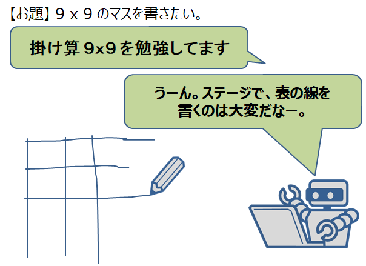
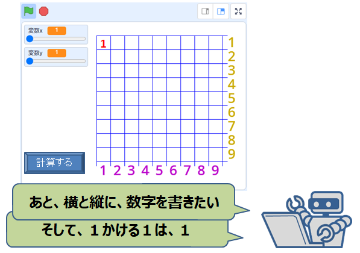
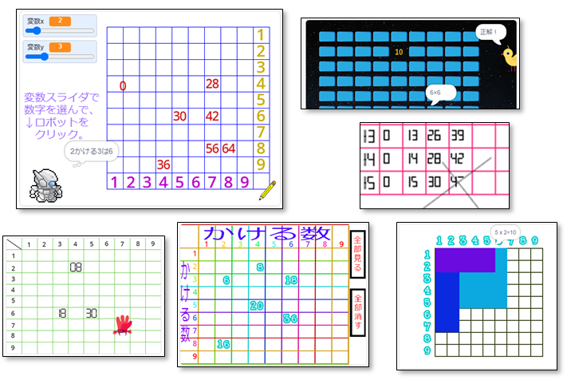

開催報告
Scratchお題『100マス計算』
「CoderDojo 立川」の皆で why 大喜利 の掛け算九九に挑戦。ペンを使った繰り返し定義と スプライトを使った二桁の数字をどう描画するのかがポイント。 しかし、そこはベテランのメンターがペンで描く7セグ数字で解決。えええーっ、そんな予想外な...。 結果は画面を見ていただければ分かる通り、十人十色のデザインとアイディア。 ここで得た知見は、「（100マス計算を作るという）目的を達成する手段は無限のアイディアで溢れている」こと。



▼みんなの作品
